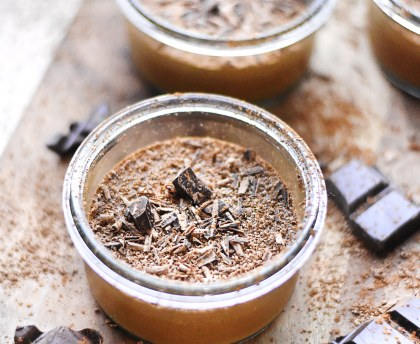

Temps de cuisson : 15 min
Difficulté : Trés facile
Séparer les blancs des jaunes d'oeufs.
Faire ramollir le chocolat dans une casserole au bain-marie.
Hors du feu, incorporer les jaunes et le sucre.
Battre les blancs en neige ferme.
Ajouter délicatement les blancs au mélange à l'aide d'une spatule.
Verser dans une terrine ou des verrines.
Mettre au frais 2h minimum.